Od scénáře po wherigo.com
Scénář
Celá hra je v jednom textovém souboru: lokace nebo zóny, předměty, postavy, otázky, texty a obrázky.
scénář.yamlKontrola a simulace
Generátor scénář zkontroluje a projde řešení krok po kroku. Hra, která nejde dohrát, se do Urwiga vůbec nedostane.
Projekt pro Urwigo
Vznikne projekt i s médii, který jde dál otevřít a upravovat v Urwigu. Každé vygenerování zvýší verzi o 0.1.
projekt.urwigoBalíček GWZ
Balíček sestaví nainstalované Urwigo, jen bez otevření okna. Výsledek je stejný jako z menu Sestavit, včetně ochrany cartridge.
cartridge.gwzNahrání na wherigo.com
Nová verze se nahraje přes prohlížeč s uloženým přihlášením. Do poznámky k verzi se doplní datum, čas a podpis WherigoGeneratoru.
Čtyři druhy her, jedno jádro
Každý typ má vlastní engine v Lua a vlastní formát scénáře. Zápis projektu pro Urwigo, verze, obrázky a nahrávání sdílejí všechny typy.
UNLOCK
Úniková hra s kartami podle deskovky UNLOCK!. Kombinace karet, kódy a stroje. Prompty pro ilustrace karet se vytvoří samy.
wherigo-gen unlockTextovka
Textová adventura s příkazy VEZMI, POUŽIJ a PROZKOUMEJ. Lokace, inventář a předměty jako ve starých českých textovkách.
wherigo-gen textovkaPuzzle
Logické hlavolamy na displeji telefonu. Každý hlavolam je samostatný modul, takže další se dají snadno přidat.
wherigo-gen puzzleAdventura
Hra po trase se zónami, které se otevírají podle pravidel, s postavami, předměty a otázkami na odpovědi z terénu.
wherigo-gen adventuraHry z generátoru na wherigo.com
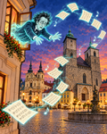
Stáhnout na wherigo.com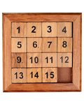
Stáhnout na wherigo.com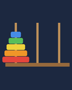
Stáhnout na wherigo.com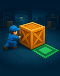
Stáhnout na wherigo.com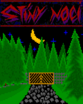
Stáhnout na wherigo.com
Ke stažení z wherigo.com je potřeba přihlášení účtem Geocaching. Cartridge se hraje v c:geo nebo v jiném přehrávači Wherigo.
Chyby, které se v Urwigu hledají těžko
Hra jde dohrát. Řešení ze scénáře se přehraje do konce dřív, než vznikne projekt.
Verze sedí. Před nahráním musí mít scénář, projekt i balíček přesně tu verzi, kterou wherigo.com přidělí.
Pořadí příkazů v c:geo. Přehrávače OpenWIG řadí příkazy podle hashovací tabulky Lua. Generátor volí identifikátory tak, aby se příkazy ukázaly v zamýšleném pořadí.
Ochrana cartridge. Zakódované texty, hashované odpovědi a zamaskované identifikátory jsou zapnuté vždy.
Texty bez překvapení. Diakritika, zalamování řádků a znaky se upraví tak, aby vypadaly stejně v c:geo i v emulátoru.
Z příkazové řádky
# zkontrolovat a vygenerovat projekt wherigo-gen <typ> scénář.yaml # jen kontrola a přehrání řešení wherigo-gen <typ> scénář.yaml --check # balíček .gwz bez otevření Urwiga wherigo-gen gwz scénář.yaml # jednou: přihlášení na wherigo.com wherigo-gen wherigo-login # nahrát novou verzi (nebo --nahrat při generování) wherigo-gen nahrat scénář.yaml --poznamka "Co je nového" # nahrát obrázek cartridge (listing/wherigo_com.png, 120 × 150 px) wherigo-gen obrazek scénář.yaml
Běží v Pythonu na Windows s nainstalovaným Urwigem. Hry se testují v c:geo a v emulátoru Urwiga.
Co přibylo
- 22. 10. 2026
- Seznam všech veřejných cartridge autora z wherigo.com s počtem stažení.
- 22. 10. 2026
- Nahrání obrázku cartridge (120 × 150 px) na wherigo.com.
- 22. 10. 2026
- Sestavení balíčku GWZ bez okna Urwiga a nahrání nové verze na wherigo.com s kontrolou verzí.
- 22. 10. 2026
- Nový typ adventura pro hry v terénu a další hlavolam pro typ puzzle.
- 21. 10. 2026
- Každá cartridge má vlastní složku: scénář, obrázky, listing a vygenerovaný projekt pohromadě. Popis formátu scénáře pro každý typ.
- 20. 10. 2026
- Typ puzzle s vyměnitelnými hlavolamy.
- 20. 10. 2026
- Typ textovka: textová adventura hratelná kdekoli, bez zóny.
- 20. 10. 2026
- Přestavba z generátoru jedné hry na WherigoGenerator se společným jádrem a typy cartridge.
- 20. 10. 2026
- První verze: generátor únikové hry UNLOCK.
Všechny moje cartridge na wherigo.com
33 veřejných cartridge, dohromady 29 564 stažení. Údaje z wherigo.com k 22. října 2026.
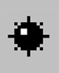
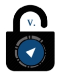
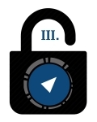
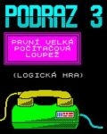
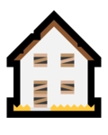
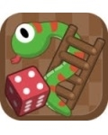
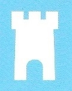
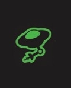
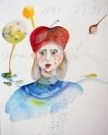
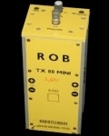
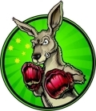
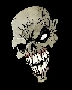
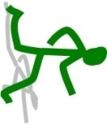

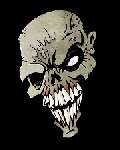
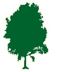

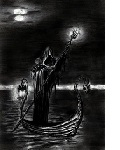
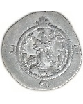
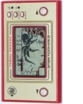
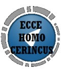